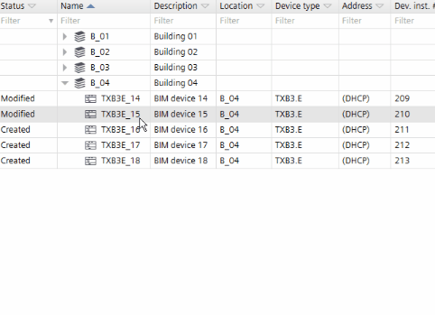

Exporting modules and I/Os (for TXB3.M only)
You can also export the I/O configuration data to an xml file. In a second step you can edit the file in an xml editor or a text editor, and reimport the changed configuration.

You cannot import or export accessories into a bus interface module.

The procedure is the same as for creating data exports.
Create a data export
- Go to Building > Building structure
- Select a device or a hierarchy object.
- Right-click and select Create export.
- The Create export dialog box opens.
- Select the type of content to export:
Select contents - Management station/Management platform (Desigo Insight or Desigo CC)
- Electrical data (CAD)
- BACnet engineering data exchange (EDE)
Note: Verify if the Object structure on BACnet is set correctly. KBOB does not allow additional hierarchies (structured view object).
See Device details
See BACnet object instances. - BACnet object instance numbers (PXC4/5/7 only)
See BACnet object names. - BACnet object names (PXC4/5/7 only)
- BACnet object properties (PXC4/5/7 only)
- I/O configuration (TXB3.M/E)
Scope - Selected devices (rooms)
- All devices from the project
- (Optional) Enter a comment.
- Click OK.
- The selected content is exported to the default directory for exports.
- A dialog box displays allowing you to open the containing folder.